1. Delightex Edu 로그인
복사한 아이디와 비밀번호를 붙여넣고 로그인합니다.
Delightex Edu 로그인Delightex Edu
수업 시작 전 사전 지식
자전, 공전, 달의 뒷면, 동주기 자전을 짧게 확인한 뒤 Delightex 활동을 시작합니다.
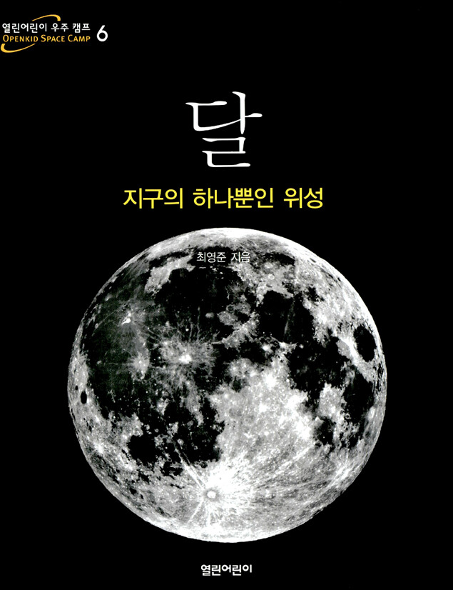
함께 보는 참고 도서
명주도서관 2차시
걸음으로 탐사한 뒤, 선회로 지구와 달의 움직임을 관찰합니다.
수업 시작
학생 목록을 불러오고 있어요.
선택한 학생
비밀번호는 화면, localStorage, URL, 제출 데이터에 저장하지 않습니다.
선택 후 계정 정보와 다음 단계가 나타납니다.
복사한 아이디와 비밀번호를 붙여넣고 로그인합니다.
Delightex Edu 로그인2026 명주도서관 학급을 선택합니다.
1차시에서 작업한 자신의 프로젝트를 열고 2차시 활동 장면으로 이동합니다.
2차시 학습 목표
자전과 공전의 차이를 설명할 수 있다.
공전만 할 때와 자전·공전을 함께 할 때를 비교한다.
AI Buddy 답변을 사실과 추측으로 나누어 본다.
오늘의 미션
오늘은 달이 지구 주위를 도는 동안 공전 1회 동안 자전 1회를 하는지 직접 실험합니다. 걸음으로 탐사한 뒤, 선회로 지구와 달의 움직임을 관찰합니다.
핵심 과학 개념
천체가 자기 축을 중심으로 도는 운동이에요.
천체가 다른 천체 주위를 도는 운동이에요.
달의 자전 주기와 공전 주기가 같아 같은 면이 보여요.
항상 어두운 면이 아니라 지구에서 직접 볼 수 없는 면이에요.
Delightex 활동 준비
장면 이동 기능
로켓을 선택하고 코드 탭을 엽니다. ‘코블록스에서 사용’을 켜서 Rocket 오브젝트를 코드에서 사용할 수 있게 합니다.
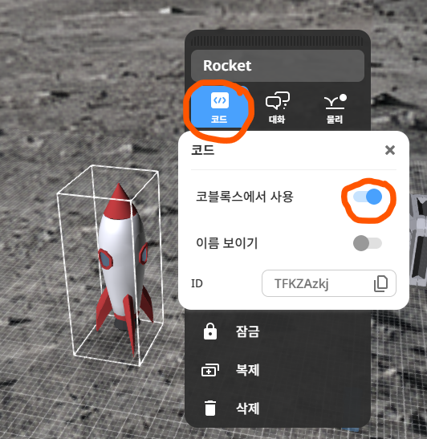
장면 목록에서 새 장면을 추가하고 프로젝트 장면을 선택해 장면 2를 만듭니다.
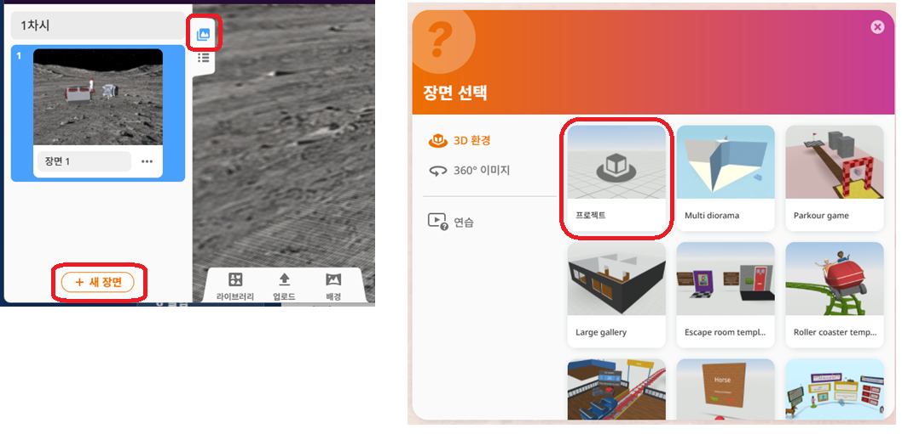
로켓을 클릭하면 문이 열리고, 1초 뒤 장면 2로 이동하도록 코딩합니다.
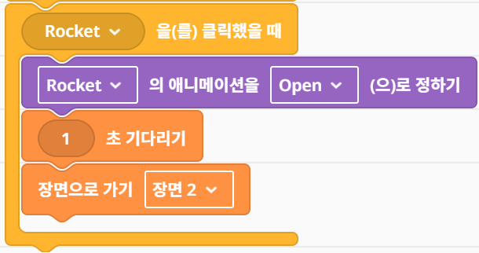
장면 2 구성
배경 메뉴에서 수정을 누르고 우주 배경을 선택합니다.
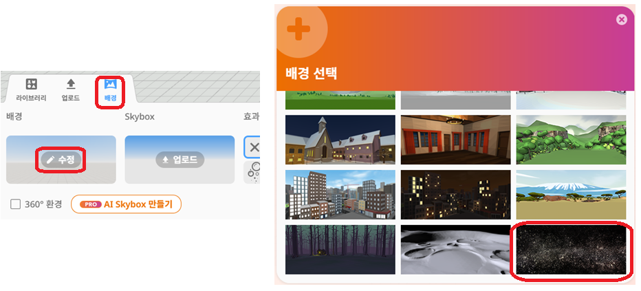
카메라 이동 설정을 열고 걸음에서 선회로 바꾼 뒤 메인 카메라로 사용할 수 있게 확인합니다.
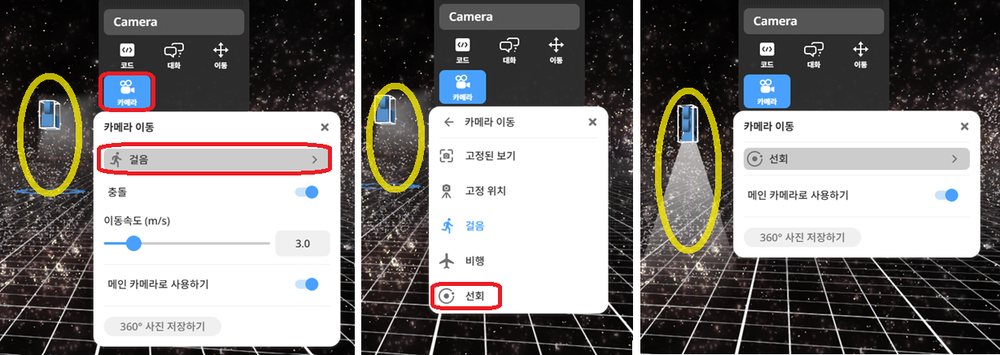
라이브러리에서 자연, 행성 순서로 이동한 뒤 지구와 달 오브젝트를 추가합니다.
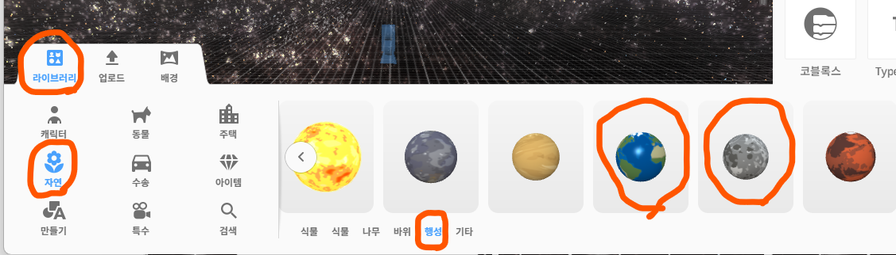
지구는 X 0, Y 0, Z 0, 크기 1.0으로 두고, 달은 X 4.5, Y 0, Z 0, 크기 0.25로 배치합니다.
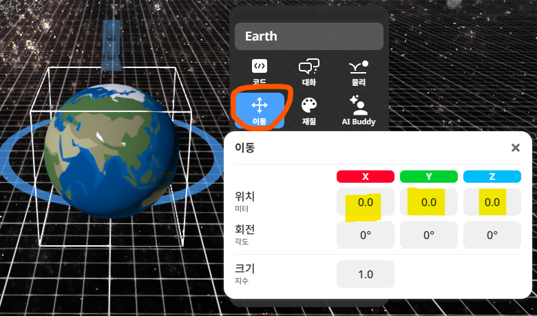
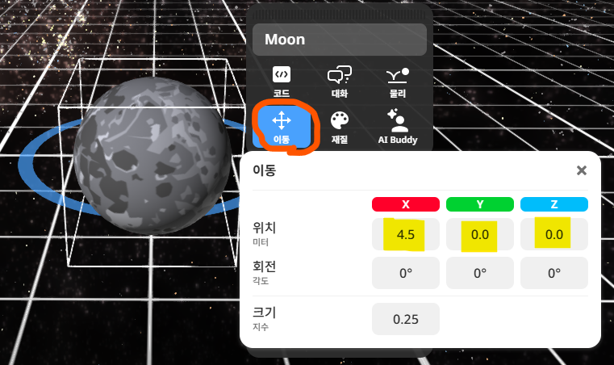
장면 2 구성
라이브러리에서 특수, 경로 순서로 이동해 원형 경로를 추가합니다. 경로 이름은 달공전주기로 바꾸고, 위치 X 0, Y 0, Z 0, 크기 4.5로 맞춥니다.
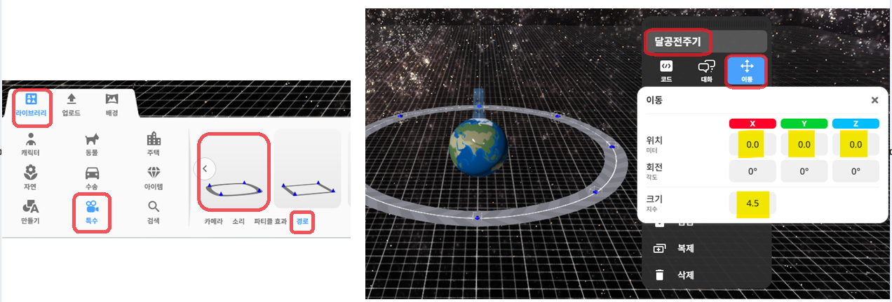
캐릭터에서 우주인 버디를 추가하고 위치 X -6.0, Y 1.5, Z 0.5로 배치합니다.
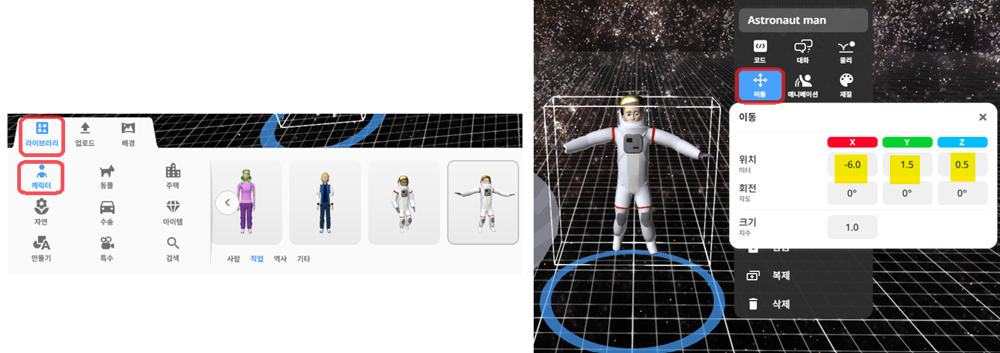
특수에서 카메라를 추가하고 위치 X -6.0, Y 6.0, Z 2.0, 회전 Z 180°로 설정합니다.
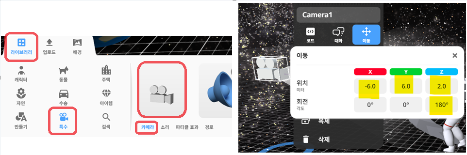
장면 1
장면 1에서는 우리가 우주 탐험가가 되어 직접 걸어 다닙니다. 이 이동 방식이 걸음입니다. 이제 궤도 연구소 이동 버튼을 눌러 관찰 장면으로 가 보겠습니다.
장면 2
| 요소 | 배치 기준 |
|---|---|
| 지구 | 공간의 중심 |
| 공전 궤도 | 지구를 중심으로 배치 |
| 달 | 공전 궤도 위 |
| AI Buddy | 공전 궤도 바깥쪽의 질문 스테이션 |
| 카메라 | 선회 |
| 학생 활동 | 마우스로 선회하며 관찰 |
CoBlocks 실험
자전 각도 표시가 바뀌어요.
관찰 안내: 달 표면의 표시를 기준으로 방향 변화를 관찰합니다.
‘동시에 실행하기’ 안에 다음 두 명령을 배치합니다.
공전 1회의 시간과 자전 1회의 시간을 같게 하고 두 동작을 동시에 실행하면 달의 같은 면이 지구를 향합니다.
달 표면의 표시가 지구를 따라가지 않으면 시계방향과 반시계방향을 바꾸어 다시 실행합니다.
빠른 학생 추가 미션
공전 시간과 자전 시간이 다르면 두 움직임의 주기가 일치하지 않습니다.
| 실험 | 공전 | 자전 | 회전각 | 예상 결과 |
|---|---|---|---|---|
| 동주기 자전 | 5초 | 5초 | 360° | 같은 면이 지구를 향함 |
| 자전 2회 | 5초 | 5초 | 720° | 달 표면의 표시가 지구를 지나침 |
| 자전 반 바퀴 | 5초 | 5초 | 180° | 달 표면의 표시가 지구를 따라가지 못함 |
| 자전 시간이 너무 짧은 경우 | 5초 | 1초 | 360° | 자전이 공전보다 먼저 끝남 |
AI Buddy 질문 활동
오늘의 탐사 결론